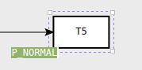

Editor View
Editor View is the workspace for creating a net. You can either load an existing net or create a new one.
To create a new net, click on New Project.
To load a net, click on Open project and select the desired net.
Tools
Creating objects
One of the instruments for creating net objects is the mouse right-click button menu. You can bring it up by clicking the right mouse button in the editor area.
To create a new place or transition, select the corresponding option of the menu.
Having created an object, you can create the next one by putting the cursor on the first object and bringing up the menu with the right mouse button click. A place can be related only to a transition and a transition can be related only to a place. It's impossible to make an arc between two transitions or two places.
To create an arc:
- click on a place or transition to bring up the menu

- select the arrow icon
- draw the arc to the object you wish to connect to.
Creating new subpage
When a CP-net uses a substitution transition the logic that the transition represents must be kept somewhere. It is kept on a page called a subpage. A page that contains a substitution transition is called a superpage.
To create a new subpage, select the corresponding option in the menu
The subpage created has a corresponding mark, it looks like this:
Moving selected objects to subpage
If you need to make a group of objects to be the objects of a subpage, use the menu:

- Press the lasso icon (the top icon)
- Select objects to be replaced to the subpage by drawing the lasso with the pointer
- Press the icon in the middle ("Move selected objects to subpage")
Deleting objects
To delete a place, an arc or a transition put the cursor on the object to be removed, bring up the right-click menu and select the bin icon.
You can also remove several objects at once using the menu in the upper left corner of the Editor View.
To delete a group of objects:
- Press the lasso icon (the top icon)
- Select objects to be removed by drawing the lasso with the pointer
- Press the bin icon
Inscriptions
Adding inscriptions
To add an inscription, click on the place, transition, or arc where you want to add the inscription. This activates the text edit mode for the object you have clicked on.
Immediately after creating a place, transition, or arc you are also in the text edit mode, and can add the first inscription right away.
To switch between inscriptions of an object, put the cursor on the object and use the Tab key.
Place inscriptions
Place inscriptions are created when you add/edit inscriptions for places. There are three inscriptions that may be associated with a place.
- Place name inscription – optional. The place name inscription is an optional label that identifies the place, and it may contain any sequence of characters.
- Color set inscription – required. The color set inscription determines the color set, i.e. the type of all the tokens that can be put in the place.
Default color set inscription
- Initial marking inscription – optional. The initial marking inscription is a multiset expression that specifies the initial tokens for a place.
Default initial marking inscription
Transition inscriptions
Transition inscriptions are created when you add/edit inscriptions for transitions. There are five inscriptions that may be associated with a transition. All are optional:
- Transition name inscription
- Condition inscription
Default condition inscription
- Time inscription
Default time inscription

- Code segment inscription
Default code inscription
- Priority inscription
Default priority inscription

Arc inscriptions
Arcs have only one inscription — the arc inscription. An arc inscription is a CPN ML expression that evaluates to a multiset or a single object.
Default arc inscription
ML editor
ML editor is a tab for creating declarations using ML code. It's easier to write a declaration in the ML editor if the declaration is very complex.

Tabs
The number of tabs related to the Editor View depends on how many pages have been created. Clicking on a page in the Project tree (block "Pages") opens the corresponding tab in the Editor View. You can switch between the pages either by clicking on the names of pages in the Project tree
or by clicking on the tabs in the Editor View

Diagram zooming
To zoom in or out, hold the Ctrl key and scroll the mouse wheel.
Resizing objects
To resize an object:
- put the pointer on any corner of the object
- when you see the pointer as two-way arrow, drag the corner of the object to get desired size and form.
Diagram moving
To move a diagram across the Editor View, set the pointer in the free space of the Editor View, hold down the left mouse key and move the pointer. The diagram will repeat the movements of the pointer.
To move a particular object, put the cursor in the object, hold down the left mouse key and move the pointer.
While moving the object, you can see magnetic guidelines (orange lines in the picture below).
Magnetic guidelines are horizontal and vertical lines which can be used for aligning your objects during the graphical editing of the net.